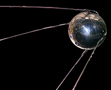

Claramente para a exploração do espaço precisava-se de um meio de transporte para tal finalidade. Daí veio a ideia de se usar o foguete como meio de transporte para a exploração espacial.
Não há certeza da origem dos foguetes mas se tem notícia de que no século III a.C., os chineses utilizavam tubos de bambu cheios de salitre, enxofre e carvão em cerimônias religiosas com o objetivo de espantar espíritos malignos.
Além disso, os chineses foram responsáveis pela descoberta da pólvora usada pelos antigos como combustível para mísseis.
No final do século XIX ao início do século XX, o estadunidense Robert Goddard, o russo Konstantin Tsiolkovsky e o alemão Hermann Oberth desenvolveram projetos e tecnologias de foguetes que são usados até hoje.
Robert Goddard, por exemplo, foi o responsável pelo lançamento do primeiro foguete propelido a combustível líquido, mas precisamente gasolina e oxigênio.
Konstantin Tsiolkovsky publicou seus estudos no ano de 1903 em que defendia o uso de foguetes para explorar o espaço, calculava a velocidade necessária para livrar-se da gravidade da Terra e principalmente defendia o uso de hidrogênio e oxigênio líquidos em foguetes de múltiplos estágios.
E por fim o alemão Hermann Oberth que durante a Segunda Guerra Mundial trabalhou no desenvolvimento de mísseis e foguetes.
Fazendo parte do Programa Sputnik, o satélite Sputnik I foi lançado do Cosmódromo de Baikonur, no Cazaquistão, e não tinha nenhuma função, ele apenas transmitia um sinal de rádio, "beep", que podia ser sintonizado por qualquer radioamador.
Apenas um mês depois, a União Soviética lançou a segunda nave do Programa Sputnik, a Sputnik II com a cadela Laika.
Antes do lançamento do Sputnik 2, tanto a União Soviética como os Estados Unidos já haviam lançado animais vivos em voos suborbitais.
Esta missão exigia uma atenção especial ao treinamento dos cães, já que a duração do voo exigia dos animais uma adaptação em permanecer em espaços confinados por um período maior.
